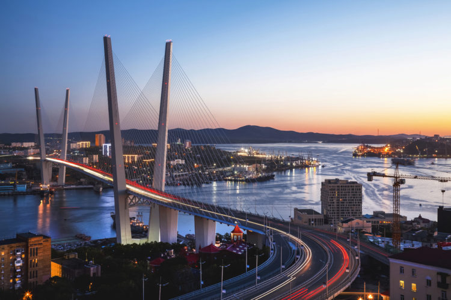

12. Вантовые мосты во Владивостоке (Владивосток)

Вантовые мосты во Владивостоке потрясают своим величием каждого, кто приезжает в страну посмотреть достопримечательности России. Это современное грандиозное сооружение, строившееся почти шесть лет, стало современным символом города и его гордостью. До недавнего времени даже местные жители могли посещать остров Русский только по специальному разрешению из-за военных объектов на острове. Сегодня же вантовые мосты, часто называемые просто «Русский мост», соединили континент и остров. Открытый в июле 2012 года, мост длиной 1885 метров подвешен на мощнейших кабелях. На его постройку ушло более миллиарда долларов. Дмитрий Медведев назвал уникальное сооружение «визиткой» города Владивостока и всего Дальнего Востока. Изначально сооруженный для гостей саммита АТЭС, этот ультрасовременный мост стал самым популярным туристическим объектом во Владивостоке. Это великое сооружение уже вошло в книгу рекордов Гиннесса.